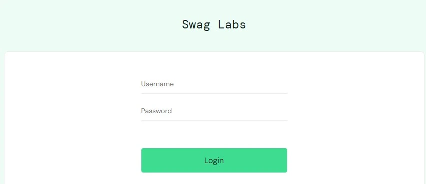

Framework d’automatisation de tests end-to-end utilisant Playwright pour une application e-commerce. Le projet couvre l’authentification utilisateur, l’ajout de produits au panier, le processus de commande et la validation de la confirmation d’achat.

Créer un framework d’automatisation de tests end-to-end avec Playwright afin de simuler un parcours utilisateur réel sur une application e-commerce de démonstration. L’objectif principal est de valider les fonctionnalités critiques telles que l’authentification, l’ajout de produits au panier et le processus de commande.
Dans ce projet, j’ai mis en place une structure d’automatisation complète avec Playwright. J’ai commencé par configurer l’environnement de test et organiser le projet en séparant les données de test, les helpers et les scénarios. J’ai ensuite automatisé le parcours utilisateur principal : connexion avec différents utilisateurs, ajout de produits au panier, validation du panier et processus de commande jusqu’à la confirmation finale. Une attention particulière a été portée à la réutilisabilité du code grâce à des fonctions helper (login, ajout au panier, checkout) et à la gestion des données via des fichiers dédiés.
Ce projet m’a permis de renforcer mes compétences en automatisation de tests end-to-end avec Playwright. J’ai appris à structurer un framework de test maintenable, à utiliser une approche data-driven, à créer des fonctions réutilisables et à simuler un parcours utilisateur complet sur une application web. J’ai également amélioré ma compréhension des bonnes pratiques en QA automation et en organisation de projet.
Voir le code source du projet sur GitHub